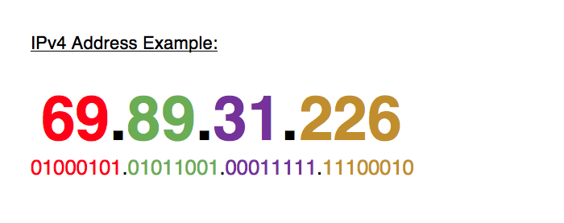

Pictured above is an example of a network switch which is used to connect servers so that they can “talk” to each other, thus creating a network that can be used for sharing information. The Domain Name System (DNS) uses domain name servers to locate domain names and translate them into Internet Protocol (IP) addresses. A domain name is located in the first part of a Uniform Resource Locator (URL) and you can find more information on how to read a URL here. DNS is separated into a distributed hierarchy of servers including root name servers, Top Level Domain (TLD) servers, and authoritative servers. The functionality of the Internet heavily relies on DNS. The DNS protocol is a detailed specification of the data structures and exchanges that are used in the DNS and it is a part of the Internet Protocol Suite. The Internet Protocol Suite is a set of communication procedures used on the Internet and it is commonly known as TCP/IP. Transmission Control Protocol (TCP) and Internet Protocol (IP) are the foundational protocols of the Internet Protocol Suite.
When information is sent via the Internet, the data is divided into packets that have a maximum size of 64 kilobytes. When data being sent is broken down into multiple packets, the packets contain numbers that indicate the order in which they must be rearranged when they are received. Each packet contains a “from” address, a “to” address, the actual data being sent, and the number of the particular packet. Packets must be ordered because they often don’t arrive at their destination in order or simultaneously. TCP takes inventory of packets sent by a computer and sends an acknowledgment back to the sender if all packets are received. If all packets are not received, TCP will not approve or acknowledge the packets and they must be resent.
All IP addresses are allocated by the Internet Assigned Numbers Authority (IANA) and there are currently two versions of IP addresses – IPv4 and IPv6. IPv4 addresses are 32 bits in size and are composed of 4 numerical octets. Octets are blocks of hexadecimal digits that make up an IP address. Pictured above is a color coded example of how each numerical bit corresponds to an octet. IPv4 has two major parts to its makeup – the network address and the host address. IPv4 provides approximately 4 billion unique addresses which, unfortunately, proved to be insufficient. IPv6 addresses were created to accommodate the need for more unique IP addresses. IPv6 addresses are 128 bits in size and are composed of 8 numerical octets, allowing for approximately 340 undecillion (340 undecillion = 340 trillion trillion TRILLION!) unique addresses.